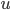

and a node pair and the task is to predict if each of those test edges are true or fake edges in the network.
and a node pair and the task is to predict if each of those test edges are true or fake edges in the network.Missing Link Prediction on Observed Twitter Network | ||
Kazi Abir Adnan Student ID: 940406 Kaggle ID: kadnan | Daniel Gil Student ID: 905923 Kaggle ID: gild2018 | |
The aim of the project is to predict missing edges of a network. The training network is a partial crawl of the Twitter social network. The task is whether edges exist among test node pairs given the network in a Kaggle class competition.
We now formalize the problem of predicting missing links. The network can be represented as a directed graph, with an edge indicating that a twitter user called source, is following another user called sink, . The input to our prediction problem is the graph and a node pair and the task is to predict if each of those test edges are true or fake edges in the network.
The training network is a directed graph which has ~5 million nodes and ~25 million edges (created using networkx [1]). The test data is a list of 2,000 edges where 1,000’s are real and withheld from the network, while the others fake. The distribution of source out degree falls below 3rd quantile and we define it as low profile that the interaction is fewer compared to the observed graph. In addition, more than 75% of the sinks’ out degree in testing dataset are 0.
Our strategy is to learn a binary classifier where true edges are positive samples and we need to inject some fake edges to train our model on negative samples. We will use the learned model to predict the missing links not observed on the network. As described earlier, the mean out degree of source nodes is shifted to low profile nodes, our strategy is to learn a model on a dataset which is representative of testing dataset.
The training graph has around 25 million true edges which are our positive samples. We know for  nodes on a directed graph, there can be combination of edges. In our case, we have only 25 million edges and the rest can be defined as fake. The primary goal is to predict missing links which may seem to contradict the strategy to create fake edges. But, we don’t create fake edges of given test pairs. The target is to create similar training dataset which is representative of test dataset so that our model can distinguish between true and fake edges of given test node pairs.
nodes on a directed graph, there can be combination of edges. In our case, we have only 25 million edges and the rest can be defined as fake. The primary goal is to predict missing links which may seem to contradict the strategy to create fake edges. But, we don’t create fake edges of given test pairs. The target is to create similar training dataset which is representative of test dataset so that our model can distinguish between true and fake edges of given test node pairs.
First, we created true edges from the training graph considering only the nodes present on the test dataset. For example, for a given test node pair we take node  and select sinks from its followees which have similar in degree and page rank of  . Then, we take sink and select source nodes from its followers which have similar out degree and page rank of source . Therefore, for a given test pair we sample edges from network based on degree and page rank score of given pairs. In case degrees are fewer than the number () or the page rank does not match, then we only take the neighboring nodes of or . To create fake edges, we select and randomly sample sink nodes which has similar degree and page rank like , we took similar approach for sink . If the degree of nodes does not match we set the according to “in” or “out degree” respective to sink and source. We do not create fake edges of test node pairs.
. Then, we take sink and select source nodes from its followers which have similar out degree and page rank of source . Therefore, for a given test pair we sample edges from network based on degree and page rank score of given pairs. In case degrees are fewer than the number () or the page rank does not match, then we only take the neighboring nodes of or . To create fake edges, we select and randomly sample sink nodes which has similar degree and page rank like , we took similar approach for sink . If the degree of nodes does not match we set the according to “in” or “out degree” respective to sink and source. We do not create fake edges of test node pairs.
Table 1:Degree, Page Rank, common followers and common followees distribution of original (Green), fake (Orange) and test (blue) dataset
Degree ratios[2] | Mutual neighbors[2] | Follow back | Triadic closure | Node Page rank[3] | Jaccard’s coefficient[2] | Adamic/ Adar[3] | Preferential attachment[3] |
In Degree Out Degree In ratio/ out ratio | Sum of common follower & followees | Sink follows back source? | # of source followees follows sink | Quality of node & quantity of links | similarity measure of mutual neighbors | similarity between nodes | probability that an edge forms with a specific node is prop. to its existing indegree |
Table 2: We have calculated several features mostly topological and link prediction based to represent a node pair (edge)
We will use traditional binary classifiers to predict edges and described in detail on the following section. It is important to note, we used 0 and 1 instead of prediction probabilities to analyze model’s contingency table for experiments.
Experiments & Dataset This table represents chronological ordering of experiments. The first row represents the first experiment after we have created the dataset. And the last row in the table represents the one selected on Kaggle as the best one | [Model, Validation AUC, # of Positives on test data, Kaggle AUC] |
We started only with edges and nodes involving test data nodes (3,948) and ended with 63,472 true edges. Then we randomly created 63,472 node pairs from nodes in test data and created fake edges (excluding pairs in test set). [Samples: ~125k (50% pos), Feature Size: 6 Features: In & out Degree, common followers & Followees] | [LR, 0.88, 805 ,0.80] |
[RF, 0.93, 424, 0.71] | |
We added feature whether sink follows back source. We also counted triadic closure which counts how many of source followees follow sink. We also created a graph out of 3948 test nodes using the edges from train data and calculated largest strongly connected component (SCC) and created four category of edges which represents source or sinks presence in SCC (1,2,3,4) [Samples: ~125k (50% pos), Feature Size: 9 Features: + Followback, +Triadicclosure, + SCC] | [LR, 0.91, 304, 0.65] |
[RF, 0.95, 516, 0.72] | |
Since 88% nodes on created graph from previous experiment belong to largest SCC. The SCC value distribution is (Source and sink both in SCC (1): 0.2, Source in SCC & Sink out (2): 0.7, source out of SCC (3): 0.03, source & sink out of SCC (4): 0.07). We created 4 separate models for each category and Kaggle AUC improved by 0.03. Though it improved, the score on Kaggle but has a big limitation. [Samples: ~125k (50% pos), Feature Size: Different for each SCC type (-) SCC & (-) Followback for 2, 3] | [LR, 1: 0.87 2: 0.92 3: 0.78 4: 0.83, 920, 0.80] |
[RF, 1: 0.92 2: 0.93 3: 0.90 4: 0.80, 573, 0.77] | |
The experiment showed SSC was not suitable as we have missing links in Graph which lead to different structures. We then moved to one class methods. The intuition was to learn One Class SVM to detect fake edges as anomalies. The model on validation test mostly distinguished fake ones. But, when we used the model on test data it predicted more than 80% as fake. Then, we got rid of fake edges and learn only true edges imputing 1% fakes on training set and predicted all test edges fake. [Samples: ~125k (50% pos), Feature Size: 9, Same Features as previous experiment] | [One Class SVM, NA, 1: 120 2: 0, N/A] |
At this stage, we thought to use clustering as the test data contains 50% of fake and original edges. Our idea was to create two cluster of edges which might represent true and fake edge clusters. We used KMeans with parameter K = 2 with the same features. Unfortunately, we ended up with a single cluster with all 2000 test edges. [Samples: Test data, Feature Size: 9, Same Features as previous experiment] | [KMeans, NA, 0, 0.5] |
A flaw was found in true training data sampling using distribution of test data. We found fake edges of training set was representing the same distribution as test data. But, the feature distribution was very different for true edges. The dataset we created are good for high profile nodes edges and does not represent the testing dataset. As a result, we created new training dataset for true edges not confining only to test nodes. We sampled more true edges fixing source node from test dataset and added more sinks from original graph. The fake edges only involved test nodes and sampled more. The intuition was as the distribution for fake edge features represents test data we were safe which was indeed another mistake. [Samples: 200k (50% pos) Feature Size: 11, Features: (+) Page Rank of source and sink] | [LR, 0.91, 429, 0.75] |
[RF, 0.93, 240, 0.67] | |
The only difference in this experiment is we fixed sink and sampled source node from original graph. The intuition was as our task is to predict follow relationship, so it is better to focus more on sinks rather sources. [Samples: 200K (50% pos), Feature Size: 11] | [LR, ~, ~, ~ ] |
[RF, ~, ~. ~] | |
We realized the sampling method for creating true edge dataset was enough wrong. We need to create true edges where source’s out degree is low. If we see the distribution of source out degree’s in test dataset we can see 75% of edges have out degree less than 500. Therefore, we improved the sampling method by adding constraints. We tried to sample nodes both for sinks and sources based on page rank. We sampled edges where for both source and sink has similar page rank for each node pair of test nodes. This seemed to be reasonable and the distribution seemed very similar to testing dataset (Table 1). We focused more to low profile nodes as they are 75% of test data. [Samples: 60K (50% pos) Feature Size: 11] | [LR, 0.52, N/A, N/A] |
[RF, 0.84, 640, 0.81] | |
Our last experiment performed similar on both Kaggle and validation set. That motivated us to sample more edges and created new training dataset. We also expanded our feature set by adding link prediction-based features. [Samples: 120K (50% pos), Feature Size: 15 Features: (+) Degree ratio (+) Jaccard (+) Adamic (+) Preferential attachment] | [LR, 0.54, N/A, N/A] |
[RF, 0.88, 729, 0.85] | |
We added another constraint of degree matching along with page rank and used Multilayer Perceptron Classifier to learn a non-linear model. We trained the model using ‘relu’, ‘tanh’ activation function and different hidden layer sizes to tune it and got some consistent result. We analyzed results against confusion matrix to select what we considered to perform better with the 100% dataset in Kaggle. [Samples: 300K (50% pos), Same Features] | [MLP, 0.85, 865, 0.853] |
Table 3 : Chronological ordering of our experiments. Here in table LR: Logistic Regression, RF: Random Forest, MLP: Multilayer Perceptron
We have tried KNN, Adaboost Classifier, Gaussian Process Classifier SVM, Decision tree classifier. But, the performance is not good as MLP, RF or LR.
The final dataset has around ~145K positive and ~145K negative samples and both Random Forest and Multilayer Perceptron (MLP) provided prominent result. We split our training dataset for validation (0.2%). As MLP is sensitive to feature values we normalized features. We tried to use PCA to reduce the dimension of feature. But, the first two principal components explain 99.5% variance and didn’t provide any insights. The features are created from adjacency matrix and can be explained in most prominent PC’s. We used several feature selection methods during training though, the performance didn’t improve.
We then focused to parameter tuning of the models using grid search method. We took sample of training data to tune the model as dataset is very large which takes time to do grid searching. For Random Forest we tried to tune max samples on leaf, depth of tree and other parameters using cross validation. For MLP we tried different activation functions, layers and neurons combination and finally selected the hidden layer equal to feature numbers and ‘relu’ activation. The final selection was in between RF and MLP. We have chosen these two different models as RF is ensembled Decision Tree based method and MLP can learn a non-linear classifier. We finally selected the result of MLP. Because, the average performance of MLP was consistent on cross-validation. In our validation set the final AUC was 0.96 and Kaggle AUC was 0.913. On the other hand, Random Forest overfitted on training data as (AUC .97 on validation) but on Kaggle it plunged to 0.851.
Training Dataset | Model | AUC (Validation) | Kaggle AUC |
Original: ~145K, Fake: ~145K Feature Size: 15, Sampling constraint: Page Rank & Degree of nodes Process: Take each node pair of test set (2000) and sample 50 sources from the followers of | Random Forest | 0.95 | 0.851 |
MLP | 0.96 | 0.913 | |
Logistic Regression | 0.77 | N/A |
Table 4: Final experiment training dataset and models. We tried to tune the model to get best result and which provided consistent performance
Our journey to final result is like a path of Gradient Descent algorithm to find the maximum AUC. At the very beginning we faced memory issue and overcame this problem by creating a subgraph containing the test node pairs. At the next step we calculated the degrees of nodes using an efficient data structure to compute necessary features. The method finally we used to sample true and fake edges is not efficient as it creates fewer fake edges for higher degree nodes. We ran out of samples on 4th quantile and it affected our prediction performance for high degree edges. At the modeling stage, we initially learned a model which focused more on high profile nodes with high in degree and out degree for true edges. The analysis on test data feature distribution helped us to focus more on low profile nodes. However, the final model doesn’t perform good on higher degree nodes as our models are more focused to low page rank nodes and degree. One thing should be mentioned with great importance is that, until very last moment of competition we submitted 0/1 instead of probability. But, when we submitted the same result with probability our AUC improved by .06. This is because, the prediction was continuous rather we predicted using the extreme values. Coding bugs were like true buddy of us and wasted ample time for feature computation. We could not add more figures due to page limitation which includes model tuning, prediction mismatch region & feature analysis.
The main challenge for the project is to create a good training dataset resembling the testing one. We want to improve our model to make more general for any test dataset. For modeling, we want to learn separate models for high-profile and low-profile nodes. The experiments depict it is very difficult to predict fake edges which involves high degree nodes. Fore feature selection, we want to try deep representation of graph features [4] as we needed more features to improve prediction accuracy. We also want to analyze feature importance which we couldn’t due to time constraint.
1. Hagberg, A., P. Swart, and D. S Chult, Exploring network structure, dynamics, and function using NetworkX. 2008, Los Alamos National Lab.(LANL), Los Alamos, NM (United States).
2. Cheng, J., et al. Predicting reciprocity in social networks. in Privacy, Security, Risk and Trust (PASSAT) and 2011 IEEE Third Inernational Conference on Social Computing (SocialCom), 2011 IEEE Third International Conference on. 2011. IEEE.
3. Page, L., et al., The PageRank citation ranking: Bringing order to the web. 1999, Stanford InfoLab.
4. Cao, S., W. Lu, and Q. Xu. Deep Neural Networks for Learning Graph Representations. in AAAI. 2016.